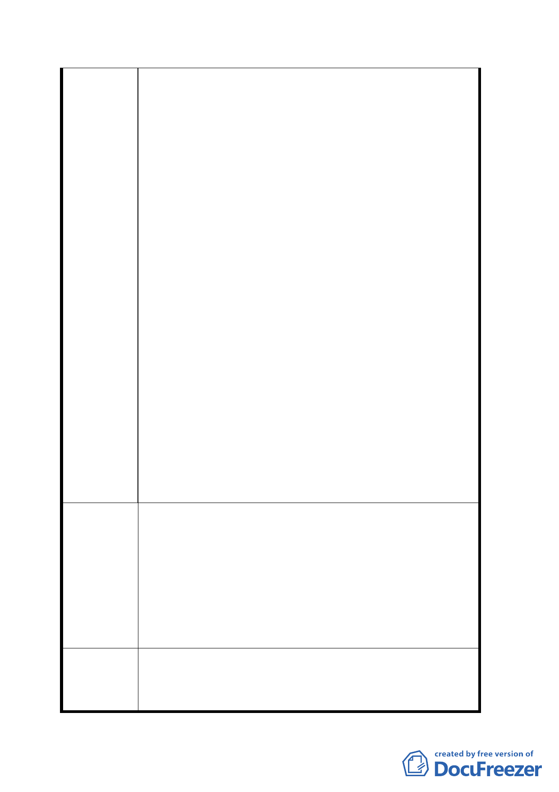

需，擬將該校管有土地與本公司土地交換產
權。民國八十七年十月台北市政府召開會議與
本公司達成協議，由本公司及實踐國中分別研
提用地規劃方案送請都市發展局納入文山區都
市計畫通盤檢討案內辦理都市計畫變更再案。
嗣因文山區通盤檢討辦理時成一再延宕，市府
爰改循專案變更都市計畫方式辦理。九十二年
十一月教育局函請本公司提供變更為電力事業
用地之財務計畫，本公司亦配合於本〈九十三〉
年一月將相關資料提送該局續辦。
二、 詎料本〈九十三〉年四月接獲教育局來函表
示，台北市政府考量本公司對於擬變更之電業
用地尚無具體使用計畫，爰逕將該等用地相關
變更內容自都市計畫書內剔除，致本公司電業
用地無法納入本案公展內容並同變更，勢將影
響本公司未來業務發展。按本公司早於八十三
七年十一月正式函送電業用地初步規劃報告至
教育局，計畫在該電業預定用地興建材料倉儲
暨配電中心辦公大樓，作為未來肩負地區配電
系統之維護及事故搶修服務之據點，以提高供
電品質。
為使本公司能提供完整妥適之電力服務，敬請 同意
依北市府與本公司原協議內容辦理變更都市計畫，
即併同將實踐國中管有之實踐段一小段二九○、二
建 議 辦 法 九一、二九二之一地號市有地及本公司所有實踐段
一小段二八九地號等四筆土地，面積合計一、六一
四平方公尺，由第三種住宅區變更為「電力事業用
地」，以符公允。
委員會決
議
一、 本案依公展計畫案通過，所提建議歉難採納。
二、 有關台電公司之器材擺放問題，由市府方面做
最大協助。
第 20 頁，共 21 頁